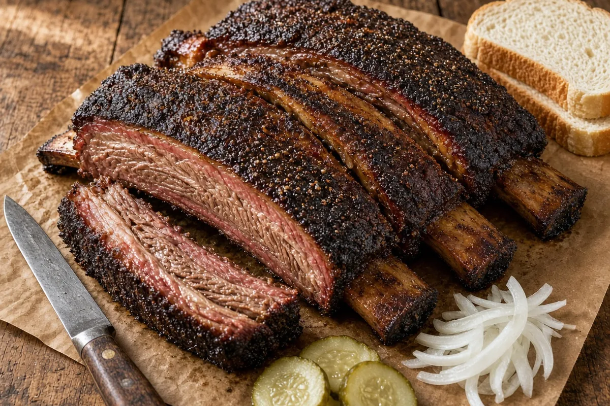

Texas-Style Smoked Beef Dino Ribs
Texas-style smoked beef plate short ribs on the pellet grill, with a heavy salt-and-pepper bark. Buy a 3-bone rack of plate ribs, about 4 to 6 lb (ask for plate ribs or NAMP 123A). Chuck short ribs are smaller and cook faster, so they will not give you the same giant bones.

By
Yield: 4 to 6 servings
Prep:
Cook:
Rest: at least 1 hour, up to 3 hours (not counted in the total)
Total:
Difficulty: Medium
Ingredients
- 1 rack beef plate short ribs (4 to 6 lb), 3-bone (NAMP 123A)
- 2 tablespoons coarse black pepper (16 mesh if you can find it)
- 2 tablespoons kosher salt
- 1 teaspoon granulated garlic, optional
- 1 tablespoon yellow mustard or hot sauce, optional, as a binder
- 1/2 cup apple cider vinegar plus 1/2 cup water, for the spritz
- 2 tablespoons beef tallow or butter, optional, for wrapping
- Pink butcher paper, for wrapping (optional)
Instructions
- Trim the ribs the night before or that morning, 10 minutes. Remove the hard fat cap on top and any loose bits, but leave a thin layer of fat. Leave the membrane on the bone side, because it holds the meat to the bones.
- Pat the ribs dry. If you are using a binder, smear on a thin coat of mustard or hot sauce. Mix the salt, pepper, and garlic, then coat the top and sides heavily. Do the bone side lightly. Let the ribs sit while the grill heats, 15 minutes.
- Set the pellet grill to 275°F with oak, hickory, or a competition blend. Put the ribs in bone side down and leave them alone for 3 hours.
- After 3 hours, spritz every 45 to 60 minutes with the vinegar-water mix, but only where the surface looks dry. Do not wash the bark off.
- Around 175°F internal, usually hours 5 to 6, wrap if you want (optional). Only wrap once the bark is dark and does not smear when you touch it. Wrap in butcher paper with the tallow underneath and put it back on the grill. If you do not wrap, you get more bark but it takes longer.
- Finish by feel, not by number. They are usually done at 203 to 208°F internal, after about 8 to 10 hours total. The real test is that the probe slides in between the bones like it is going into soft butter, with no resistance anywhere. If the probe still meets resistance, keep cooking and check every 20 to 30 minutes until it slides in easily.
- Leave the ribs wrapped (or tent them in paper) in a dry cooler or a 150 to 170°F oven for at least 1 hour, up to 3 hours. Then slice between the bones.
Notes: Serve with white bread or Texas toast, sliced onion, pickles, and a vegetable like slaw or green beans. Save the rendered drippings and tallow for cooking potatoes or greens later in the week. For a 5 PM dinner: grill on at 6:30 AM, ribs on at 7:00, wrap around noon, pull around 3:00 to 3:30, rest, and slice at 4:45. Pure Texas is just salt and pepper; the garlic is optional.